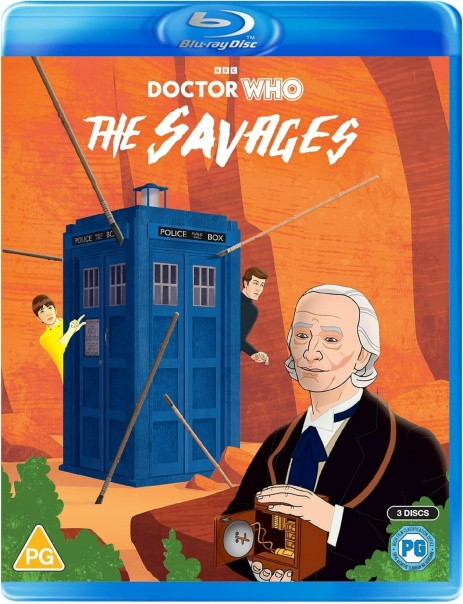
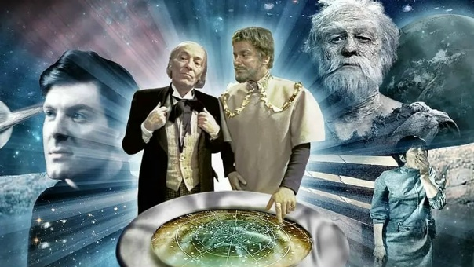
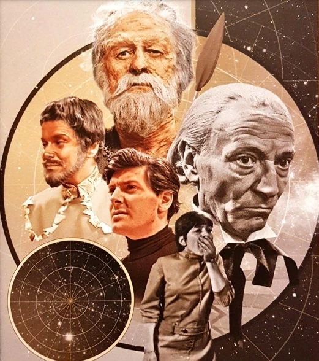
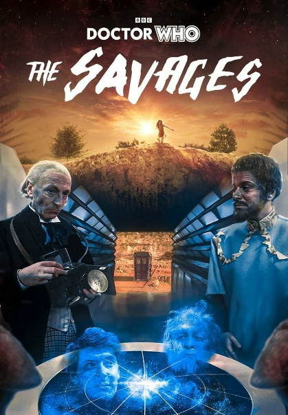
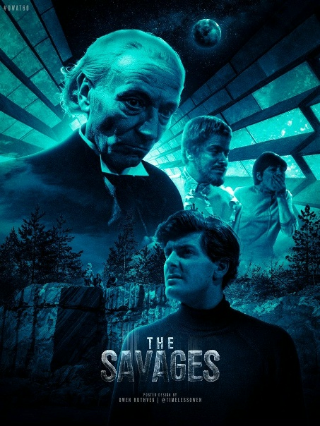

Эра Первого Доктора (3 сезон)
<<< НАЗАД ||| 9. Дикари ||| ДАЛЬШЕ >>>
Субтитры: Русские и Английские |  |
|---|---|
Субтитры: отсутствуют | |
Субтитры: Русские {Антон Линевский} и Английские | |
Субтитры: Русские {Антон Линевский} и Английские | |
Эпизод 1. Первая половина (All a Load of Who-ha)
28 мая - 18 июня 1966
4 эпизода по 25 мин.
| Все эпизоды утеряны * Имеется реконструкция * Имеется официальная цветная анимация |
|---|
 |  |
«Дикари» раскрывает мрачную правду о «идеальном» обществе: высокоразвитые Старшие поддерживают свой прогресс, выкачивая жизненную силу из «дикарей». Доктор, Стивен и Додо разоблачают эту систему, а в финале Стивен решает остаться, чтобы помочь построить справедливое будущее. Серия подводит черту под его путешествием с Доктором и ставит острый вопрос о цене прогресса — и о том, кто вправе решать, чья жизнь «ценнее».
 DVD (отрывок) 1 ноября 2004 | LC recon - февраль 2008 |  Blu-ray (Анимация) - 24 марта 2025 * Версия в нашей группе |
|---|








